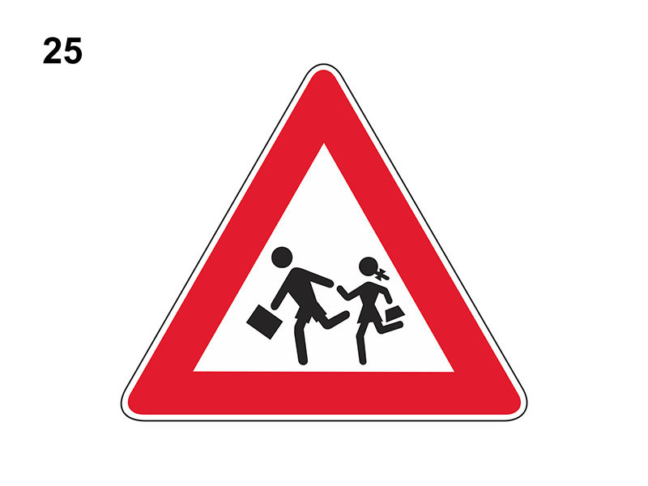

Bambini

E' un segnale di pericolo che preannuncia (di norma a 150 metri) luoghi frequentati da bambini (scuole, campi da gioco, giardini).
Invita a circolare a velocità moderata e considerare eventuali comportamenti imprudenti di fanciulli (anche se si trovano sui marciapiedi).
E' vietato sorpassare i veicoli che si sono fermati per lasciare attraversare i bambini.
Non è vero che indica la fermata di uno scuolabus, o che è posto sulla parte posteriore dello scuolabus, o che impone limite di velocità pari a 30 Km/h.
Invita a circolare a velocità moderata e considerare eventuali comportamenti imprudenti di fanciulli (anche se si trovano sui marciapiedi).
E' vietato sorpassare i veicoli che si sono fermati per lasciare attraversare i bambini.
Non è vero che indica la fermata di uno scuolabus, o che è posto sulla parte posteriore dello scuolabus, o che impone limite di velocità pari a 30 Km/h.